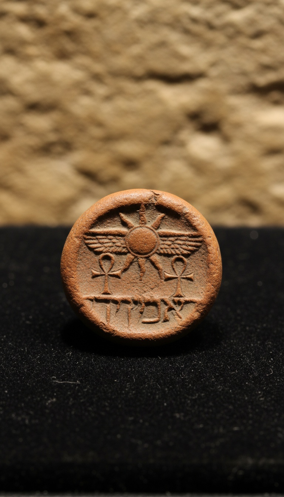

A Bible king's personal signature sat in a Jerusalem garbage dump for twenty-seven centuries, stamped with a winged sun.
It is a lump of clay about a centimeter across. It names King Hezekiah, it names his father, and it carries a symbol that should never have appeared on the seal of the most aggressive idol-smasher in the Old Testament. Every detail on that clay points back to the book that described him first.

The Lump of Clay Under the Temple Mount
The seal came out of the Ophel, the ridge running south from the Temple Mount's southern wall. This is the strip of ground where the kings of Judah built their royal quarter.
Archaeologist Eilat Mazar of the Hebrew University of Jerusalem's Institute of Archaeology led the dig. Her team pulled the impression from a refuse layer at the foot of a royal structure in 2009, in debris dated to Hezekiah's own reign. Wet sifting caught it. Volunteers wash every bucket of dirt through a mesh screen, and a fleck of fired clay with letters on it stayed on the screen.
The Hebrew University announced it on December 2, 2015. Mazar called it the first seal impression of an Israelite or Judean king ever recovered in a scientific excavation. Its place in the ground was recorded before anyone knew whose name was on it.
Father and Son, Letter for Letter
The inscription is in paleo-Hebrew, the script the kings of Judah used before the Babylonian exile. It reads: Belonging to Hezekiah, son of Ahaz, king of Judah.
That is the exact lineage in 2 Kings 18:1, which opens Hezekiah's reign: "Hezekiah the son of Ahaz king of Judah began to reign." The father matches. The kingdom matches. The title matches.
Hezekiah ruled Judah in the late eighth and early seventh centuries BC and died around 686 BC. Scripture credits him with three massive acts, and all three left marks you can visit today. He cut a water tunnel through solid rock (2 Kings 20:20). He rebuilt and widened Jerusalem's walls (2 Chronicles 32:5). He smashed Nehushtan, the bronze serpent Moses was said to have made, because the people were burning incense to it (2 Kings 18:4).
The tunnel still runs 533 meters under the City of David, and you can wade through it with a flashlight. The Siloam Inscription carved by its diggers, recording the moment two crews met in the dark, was cut out in 1890 and now sits in the Istanbul Archaeology Museums. The wall survives too. Nahman Avigad exposed a seven-meter-thick stretch of it in the Jewish Quarter in the 1970s, and it is still called the Broad Wall.
The Winged Sun on a King Who Smashed Idols
The image on the seal is a sun disk with two wings turned downward, flanked by two ankh symbols. Those are Egyptian royal signs of protection and life.
The strongest objection writes itself. The Bible paints Hezekiah as the king who purged foreign worship, so a pagan sun emblem on his own ring looks like a contradiction. It breaks the moment you open the right chapter.
Hezekiah's life turns on the sun. In Isaiah 38, the king falls sick to the point of death. He prays, and the prophet Isaiah gives him a sign: the shadow on the stairway of Ahaz will move backward ten steps. The sun itself reverses for this king. Then the healing comes.
The one king in the Bible whose sign was the sun running backward sealed his documents with a sun that has wings.
Read Malachi 4:2 with that seal in your hand: "the sun of righteousness shall arise with healing in his wings." A winged sun, healing, and a king raised from his deathbed. The emblem fits the story the scribes recorded about this man better than anything else he could have carried.
The timing also tracks. Earlier impressions linked to Hezekiah's court show a winged scarab beetle. The Ophel seal shows the sun disk instead. The royal stamped jar handles found across Judah, the famous lmlk handles, show the same switch from scarab to sun. The king changed his sign partway through his reign, and the clay recorded when.
The Paper Trail Assyria Could Not Burn
A royal official pressed the king's ring into soft clay to close a rolled papyrus document. The back of the Hezekiah impression still carries the marks of the papyrus fibers and the string that tied it shut.
The document is gone. Papyrus rots in Jerusalem's wet winters. The clay seal outlived the letter it protected, the palace it was opened in, and the kingdom that issued it.
That kingdom was under siege when this paperwork was moving. In 701 BC, Sennacherib of Assyria swept into Judah. His own annals boast that he took forty-six walled cities and shut Hezekiah up in Jerusalem "like a bird in a cage." Three copies of that boast survive: the Taylor Prism in the British Museum in London, the Sennacherib Prism in the Institute for the Study of Ancient Cultures in Chicago, and a third in the Israel Museum in Jerusalem.
Look at what the prisms leave out. Sennacherib lists cities taken and tribute paid, and he never claims he took Jerusalem. The British Museum's Lachish reliefs show his army flaying the defenders of Judah's second city, a whole gallery wall of victory. Jerusalem gets no wall panel. 2 Kings 19:35 says an angel struck down 185,000 Assyrians in a single night. The Assyrian record goes silent at the exact point the Bible says the king of Assyria went home.
Three Meters From the Prophet
The Hezekiah seal came from that refuse dump with a cluster of other royal-court impressions. The reel told you about one naming a servant of the king. The find that followed it is bigger.
In 2018, Mazar published a second impression in Biblical Archaeology Review, pulled from the same dump about three meters from Hezekiah's. It reads Yesha'yahu. Isaiah. Below the name sit the letters N-V-Y, the opening of the Hebrew word navi. Prophet.
The corner of the clay is broken off right where the final letter would sit. The surviving letters spell the name of the one man the Bible places at Hezekiah's side through the siege, the sickness and the sun sign. His seal turned up a few steps away in the same layer of royal trash.
The forgery charge that hangs over so many biblical seals dies here. Those other seals surfaced on the antiquities market with no findspot. These two came out of a recorded excavation, in a dated layer, under a royal building, in front of a university team. The dirt is their provenance.
So stack it up. You have the king's name, the father's name, the title, the tunnel, the wall, the siege annals, and a winged sun on the seal of the king whose sun ran backward. Three meters away sits the prophet who gave him the sign.
Hezekiah's paperwork was meant to rot. It survived because someone threw it in the trash beside the palace, and that trash heap is still being sifted. If the king and the prophet were both sitting in one dump, whose seal is still in the mesh? Drop the name of the Bible figure you think comes out of the Ophel next.
Before you go
7 books the Vatican doesn't want you reading. Free PDF. The texts they cut, with sources. Joined by 300+ Inner Circle members.
No spam. Unsubscribe anytime.
Go deeper
The Hidden Canon, Vol. I: Enoch. Jubilees. Thomas. Mary. Judas. 90 pages, 14 chapters, every receipt cited. The books your Bible quietly removed.
Read the Canon →Books that informed this investigation
As an Amazon Associate, Hidden Epoch earns from qualifying purchases. Cost to you: nothing.
Research safely
The VPN we use to research without being tracked. First 3 months free.
Get NordVPN →